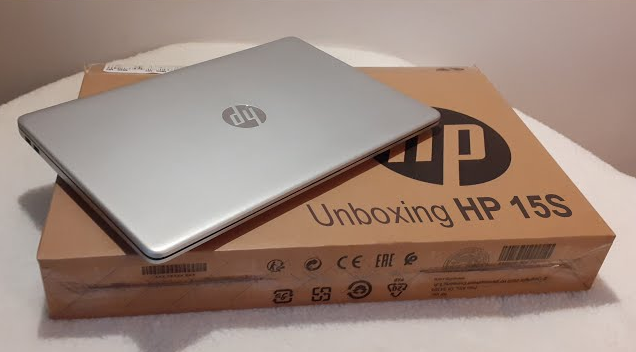
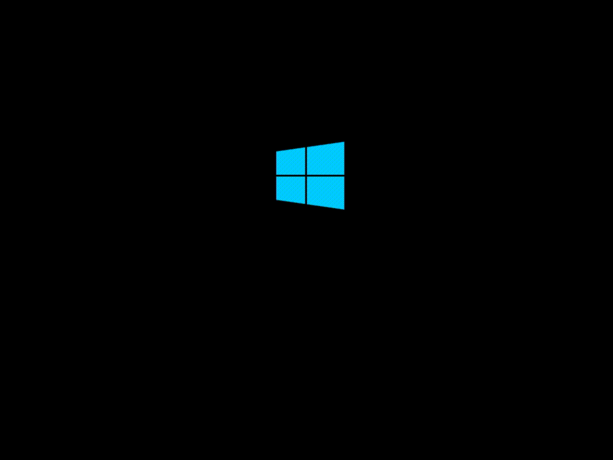

STEP 1: Unbox the Device
Unbox the laptop from whatever package it came in. You will see the laptop and a charging cable of some sort.
Plug in the cable to the laptop to the nearest outlet and wait a few minutes for the battery to charge.
Plug in the cable to the laptop to the nearest outlet and wait a few minutes for the battery to charge.

STEP 2: Powering on the device

Once the laptop is charged, open it and locate the power button on the device (usually at the top right of the keyboard)
and hold until the laptop powers on. It may take a few minutes to start up.
Once it boots, follow the on-screen instructions and configure the device settings. You may need to create a Microsoft account.
If there are any problems, take a look at our Troubleshooting section.
Once it boots, follow the on-screen instructions and configure the device settings. You may need to create a Microsoft account.
If there are any problems, take a look at our Troubleshooting section.
STEP 3: Basic Navigation
Use the trackpad near the bottom of the laptop to move your cursor around the screen.
Pressing on the left side of the trackpad will cause the mouse to left click and
pressing on the right side of the trackpad will cause the mouse to right click, which usually brings up menus and more options.

STEP 4: Connecting to WiFi

If there are questions you have which aren't covered here, it's a good idea to try using the internet!
Navigate your cursor to the bottom right of the screen and find the WiFi icon. If you can't find it for some reason, press the Windows key (near the bottom right of your keyboard), typing "Wifi Settings" and pressing enter.
Then find your network and connect to it by clicking on the network and entering the necessary details.
Navigate your cursor to the bottom right of the screen and find the WiFi icon. If you can't find it for some reason, press the Windows key (near the bottom right of your keyboard), typing "Wifi Settings" and pressing enter.
Then find your network and connect to it by clicking on the network and entering the necessary details.
STEP 5: We're Done!
You can access the internet on your laptop by navigating to your desktop and double clicking your desired browser.